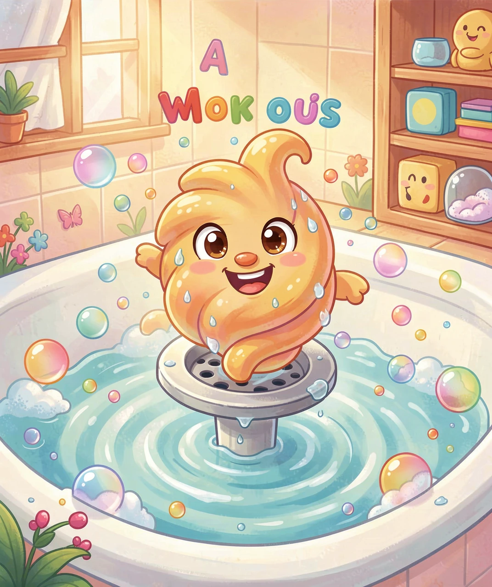
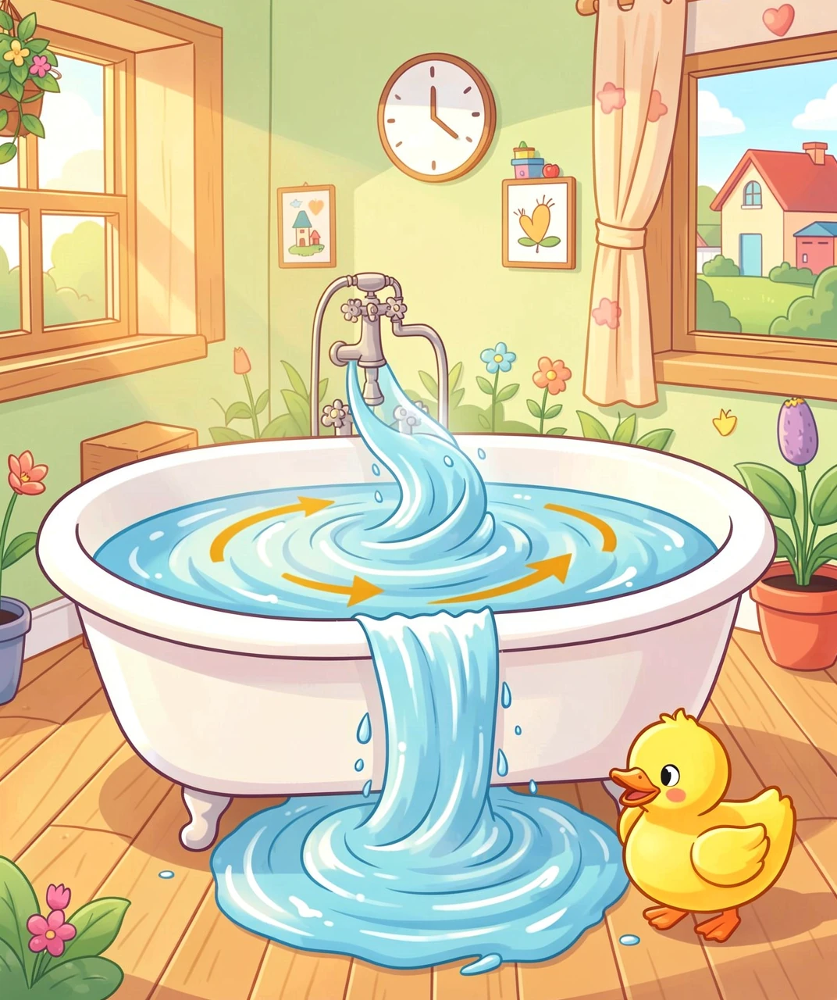
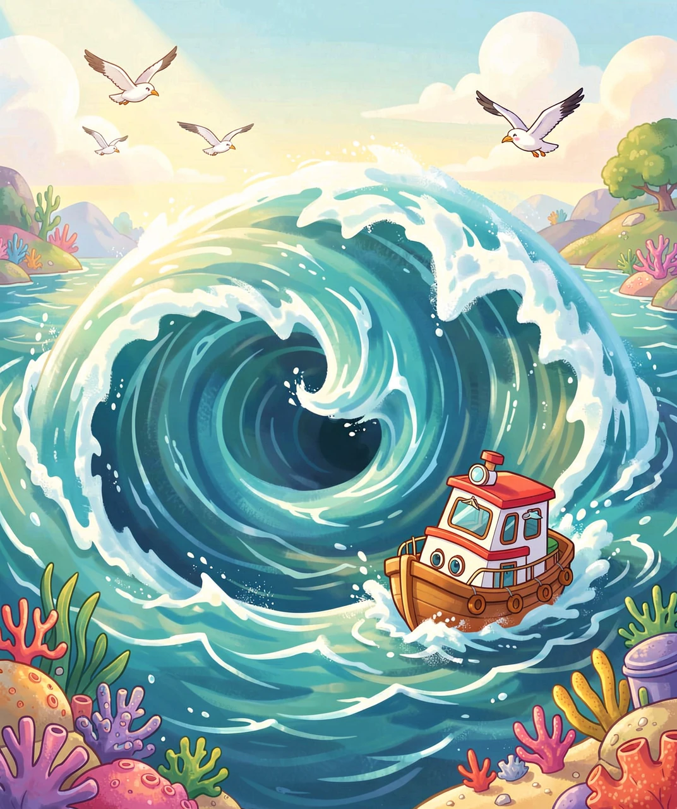
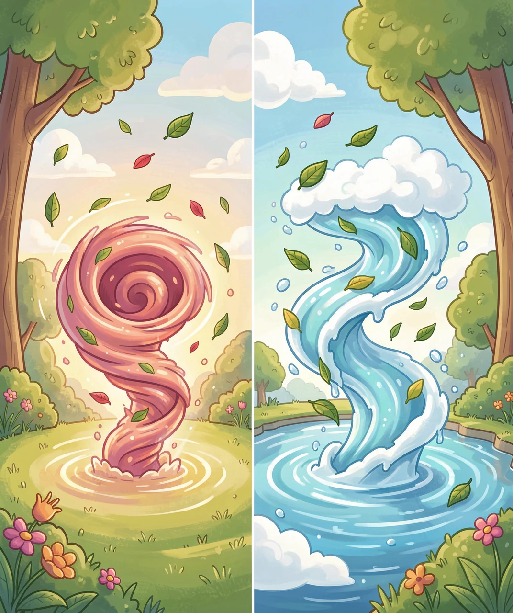
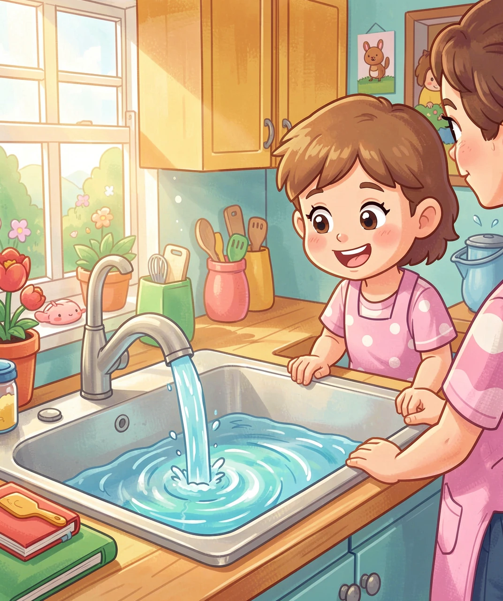

拔掉浴缸塞子的那一刻，水下发生了什么神奇的事？

洗澡的时候，你有没有盯着浴缸里的水发呆？当你拔掉底部的塞子，水并不会乖乖地「直直往下掉」，而是会转着圈圈往下流，最后在水面上形成一个越来越小的、凹进去的洞——这个不停旋转的水洞，就是漩涡！
漩涡其实一点都不神秘。它是一种旋转流动的水（或者空气、其他液体）。你可以把它想象成水里的「旋转木马」：所有的水分子手拉手，围着一个中心点不停地转啊转，越转越快，越转越往中心靠近，就像一群小朋友围着旗杆转圈，越转圈子越小。

水好端端的，为什么一拔塞子就转起来了？这里面藏着两个「幕后推手」：
💨 推手一：水流从四面八方涌过来——当塞子被拔掉，底部出现了一个「出口」，周围的水都想赶紧挤过去。但出口就那么大，水从四面八方一起冲，难免会「撞车」。为了不堵车，水就自动排成了转圈的队形，绕着一个中心往出口流，这样大家都能顺利通过。
🌍 推手二：地球在偷偷「帮忙」——地球自己一直在自转，这种转动会让运动的物体产生一种微小的「偏转力」，科学家叫它科里奥利力（简称科氏力）。它就像一个「隐形的推手」，让北半球的漩涡更倾向于逆时针转，南半球更倾向于顺时针转。

如果说浴缸里的是「小漩涡」，那海洋里就有真正的「大怪兽」了！
海洋里有一种叫大漩涡（迈尔斯特伦漩涡）的奇观。当潮水涨落、海流相遇、或者海底地形特殊时，海水会卷成一个个巨大的旋转水洞，直径能达到几十米甚至上百米！几百年前，水手们一听到「大漩涡」就害怕，传说它会吞噬整艘船。
其实，真正危险的大漩涡很少见。挪威海岸外的萨尔特流（Saltstraumen）是世界上最强的大漩涡之一，每天潮涨潮落时，这里会形成一个个快速旋转的巨大漩涡，游客可以坐船在附近观看这壮观的自然奇景。
还有一种更大的「海洋漩涡」——中尺度涡旋，它们的直径有几百公里，比一座城市还大，但转得非常慢，慢到卫星要花好几天才能拍到它转一圈。它们像海洋里的「巨型陀螺」，默默搬运着热量和营养。

漩涡不只在水中，空气里也有！而且空气里的漩涡往往更「暴躁」——它就是可怕的龙卷风。
龙卷风是空气版的「超级漩涡」：当暖湿空气和干冷空气激烈相遇，空气会剧烈旋转，形成一根从云层垂到地面的旋转气柱。这根气柱转得飞快，中心风速能达到每秒100多米，比高铁还快好几倍！所到之处，能把屋顶掀翻、把大树连根拔起。
有意思的是，龙卷风、浴缸漩涡、海洋大漩涡，它们的「旋转原理」其实是相通的——都是流体（水或空气）围绕一个中心轴旋转。只不过龙卷风是空气在转，浴缸漩涡是水在转，海洋大漩涡是海水在转。
还有一种更大更温柔的「空气漩涡」你每天都能看到——那就是台风（还记得我们之前讲过的台风吗？）。从太空看，台风就是一个直径几百公里的巨大旋转云团，中心有一个清晰的「台风眼」，那其实就是超大号漩涡的「涡心」！

漩涡虽然看起来有点神秘，但它其实是科学家和工程师的「好朋友」，人类早就学会了利用它：
🌀 搅匀东西：妈妈打鸡蛋、搅拌果汁时，勺子转出来的就是一个漩涡，它能把东西快速搅匀。
🌀 分离物质：科学家用一种叫「离心机」的机器，让液体高速旋转，利用漩涡把重的和轻的东西分开——医院验血时就用它把血液里的红细胞分离出来。
🌀 水力发电：水电站里，水流冲过涡轮机时形成的旋转，能把水的能量变成电，点亮千家万户。
🌀 保护安全：工程师在设计下水道、排水口时，会利用漩涡的原理让水排得更快，防止城市内涝。
现在，你也可以当一回「小科学家」，在家做个漩涡实验：找一个透明的瓶子装上水，用力摇晃让水转起来，你会看到瓶子里出现一个漂亮的漩涡，甚至还能看到气泡从涡心冒出来。观察它、感受它——原来科学就藏在生活的每一个小细节里！